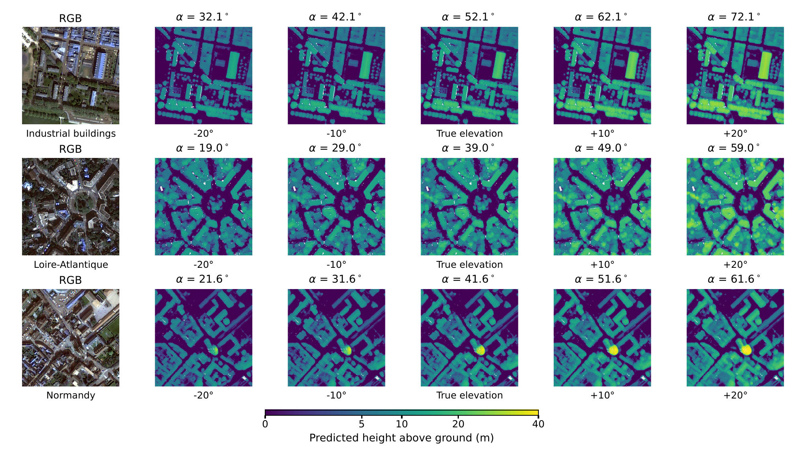

GeomSat: Learning Geometric-Aware Representations for Very High Resolution Satellite Imagery
1 AMIAD, France
2 Université Paris-Saclay, CNRS, ENS Paris-Saclay, Centre Borelli, France
3 Institut Universitaire de France, France
Monocular height estimation
Select an urban area to compare its satellite image and predicted height. Click either panel to view it at full resolution.
Loading test scenes…
Height above ground (m)
The GeomSat dataset
GeomSat brings together very-high-resolution satellite observations of the same scenes from different viewpoints. Co-visible image pairs support geometric representation learning through cross-view reconstruction. The dataset includes an initial collection, sites across France, and sites worldwide.

Dense correspondence
GeomSat also transfers to dense correspondence, matching points across satellite observations taken from different viewpoints. These examples show correspondences in San Juan, Libreville, and Nairobi, using the dedicated matching model.

The role of sun elevation
Keeping the input image fixed while changing only the sun-elevation metadata shifts the predicted heights. Higher sun-elevation values produce taller predicted structures, and lower values produce shorter ones, with an approximately linear response over the tested range. This illustrates how the model uses illumination metadata to interpret scene geometry.

Citation
Placeholder — publication details will be added when available.
@misc{geomsat,
title = {GeomSat: Learning Geometric-Aware Representations
for Very High Resolution Satellite Imagery},
author = {Bou, Xavier and Facciolo, Gabriele and Ehret, Thibaud},
note = {Publication details forthcoming}
}